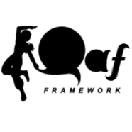
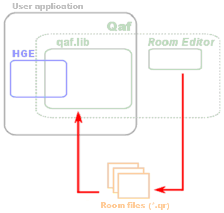

Qaf Framework Documentation
1.26

Qaf is a "game logic framework" tailored for 2D side-scrollers/platformers written in C++. It provides classes, templates, and tools designed to organize the resources and orchestrate the behavior of such projects.
Qaf is an extension to Haaf's Game Engine (see Requirements, below).
- Object-oriented (OO) design: Your class hierarchy can be easily applied to the game logic by using template-based collision functions and iterators.
- Background collision tests and helper classes provide a framework for side-scroller game mechanics.
- Debug facilities: A console similar to the C++
cout can be used to quickly output data to the screen. - Rendering of arbitrary-sized textures with the
BigTexture class. - Texture cache:
BigTextures are managed by a LRU (least recently used) algorithm, reducing load times when switching back-and-forth between game sections. - Extends HGE's input capabilities by adding joystick functions.
Qaf itself is free for use in any project, commercial or otherwise (a.k.a. the Free Lunch License). The required libraries (see below), however, have different licenses that need to be observed.
- Full package, containing source code, VS.NET and Eclipse project files, binaries, tutorials, and documentation.
- Binaries, if you just need the libraries and tutorials.
- Source code, containing C++ and Java files. This also includes VS.NET and Eclipse project files you can use to rebuild the library.
See the Change Log and History if you're upgrading from a previous version.
- Haaf's Game Engine, version 1.54
Qaf uses HGE for all its low-level resource management and event handling. Your application needs to be linked with the core library (hge.lib) and the helper classes (hgehelp.lib). Make sure hge.dll is in the same folder as your application's when it is run.
- DirectX 8.1 SDK
This should be installed along with MS Visual Studio .NET.
Make sure you are also linking with d3dx8.lib, dinput8.lib, dxguid.lib, and dxerr8.lib (these are required for joystick support and image loading).
- Run-Time Type Info
You will need an RTTI-capable compiler to use Qaf. (In Visual Studio, you will need to activate it under Project Settings -> C/C++ -> Language.)
- Java Runtime Environment, version 1.5
The Room Editor is a Java application, which requires the proper runtime environment.
Qaf assumes the developers are familiar with HGE and its functions. This framework does not "encapsulate" the engine, and you will have to use HGE functions directly on several occasions.
The Room Editor is an external application where the level designer is able to build and visualize the game's backgrounds. The resulting elements, called "rooms," are stored in resource files that can be loaded with functions in the Qaf C++ library.

Generated on Sun Mar 25 12:32:12 2007 for Qaf Framework by
 1.5.1-p1
1.5.1-p1